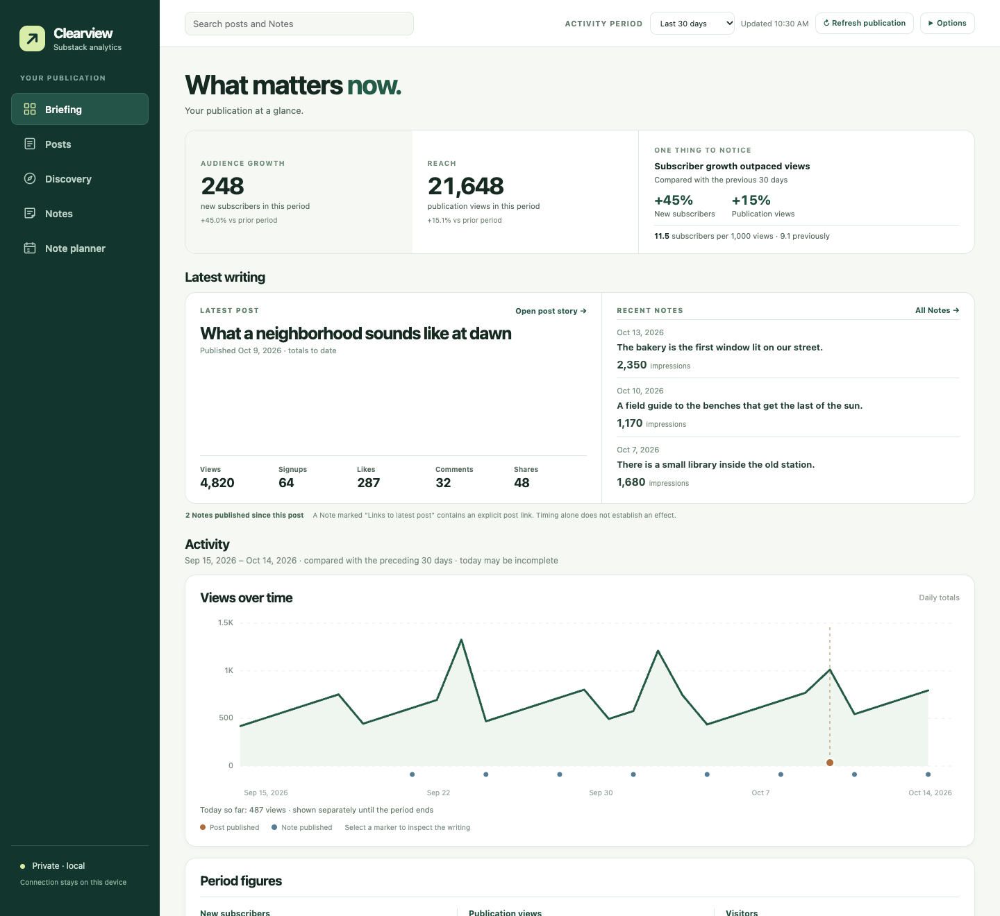
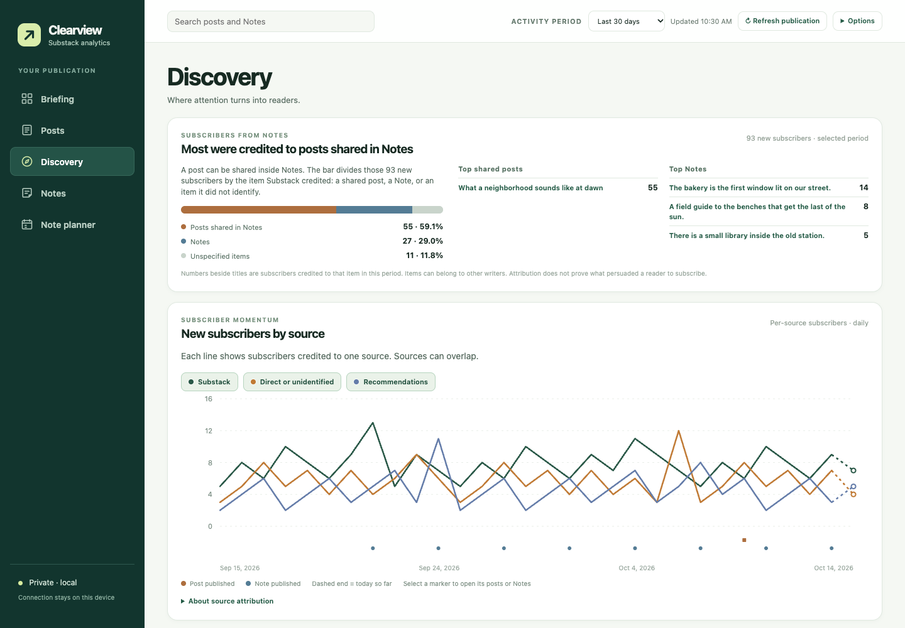
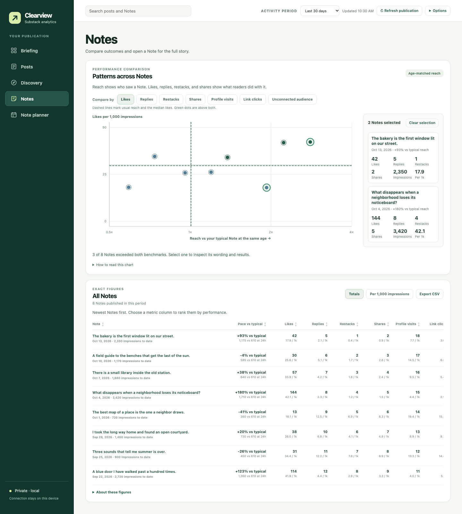

THE PRODUCT TOUR
A clearer view of your writing.
Explore the dashboard.
All examples use fictional data.





Scroll inside the preview to explore.
THE PRODUCT TOUR
Explore the dashboard.
All examples use fictional data.


